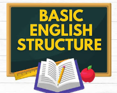
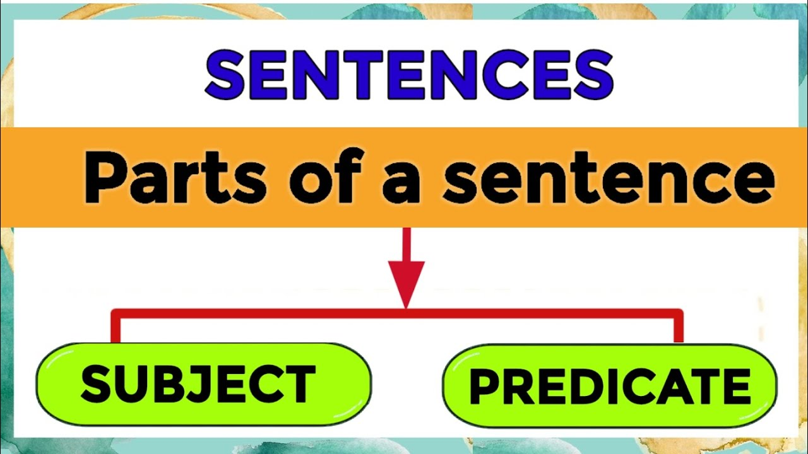
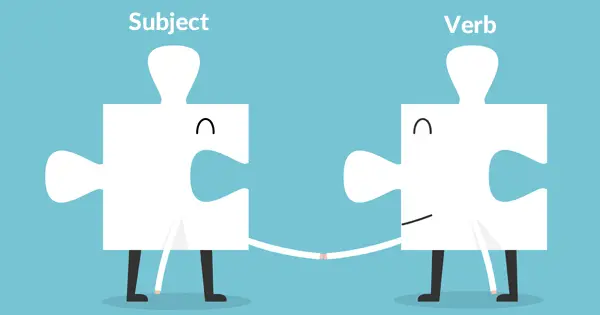

THE BIG IDEA
What Is Basic English Structure?
Basic English structure refers to the way words are arranged to form meaningful and grammatically correct sentences. Understanding sentence structure helps writers communicate their ideas clearly and effectively.
A sentence usually contains a subject and a predicate. The subject tells us who or what the sentence is about, while the predicate tells us something about the subject.
The student writes a report.
Subject: The student
Predicate: writes a report
Parts of a Sentence

1. Subject
The subject is the person, place, thing, or idea that performs an action or is being described in a sentence.
The technician repaired the computer.
Maria prepares the presentation.
The new system works efficiently.
2. Predicate
The predicate tells what the subject does, what happens to it, or what it is like. It contains the verb and may include other words that complete the meaning.
The technician repaired the computer.
Maria prepares the presentation.
The new system works efficiently.
Important Parts of English Sentences
3. Verb
A verb expresses an action or a state of being. It is an essential part of the predicate.
The students study English.
The computer runs smoothly.
The results are accurate.
4. Object
An object receives the action of a transitive verb. Not every sentence requires an object.
The student submitted the assignment.
The technician installed the software.
The researcher analyzed the data.
5. Complement
A complement completes the meaning of a subject or object. It often follows a linking verb such as "is," "are," "was," or "became."
The report is complete.
The results seem accurate.
She became the team leader.
Common English Sentence Structures
English sentences can follow different patterns. Here are four common structures used in everyday communication and technical writing.
1. Subject + Verb (S + V)
This structure contains a subject and a verb. It can express a complete thought without an object.
The computer works.
Subject: The computer
Verb: works
2. Subject + Verb + Object (S + V + O)
This structure contains a subject, an action verb, and an object that receives the action.
The technician updated the software.
Subject: The technician
Verb: updated
Object: the software
3. Subject + Linking Verb + Complement
This structure uses a linking verb to connect the subject to a word or phrase that describes or identifies it.
The results are accurate.
Subject: The results
Linking verb: are
Complement: accurate
4. Subject + Verb + Indirect Object + Direct Object
This structure tells who receives something and what is received.
The teacher gave the students an assignment.
Subject: The teacher
Verb: gave
Indirect object: the students
Direct object: an assignment
Subject-Verb Agreement
Subject-verb agreement means that the verb must agree with its subject in number. Singular subjects generally use singular verb forms, while plural subjects use plural verb forms.

Incorrect: The student write a report.
Correct: The student writes a report.
Incorrect: The students writes reports.
Correct: The students write reports.
Remember that verb forms also depend on tense and sentence structure. For example, "They are ready" is correct, while "They is ready" is incorrect.
Consistent Verb Tense
Verb tense indicates when an action happens. Writers should use the appropriate tense and avoid unnecessary changes between past, present, and future.
Present: The system stores the data.
Past: The system stored the data.
Future: The system will store the data.
Punctuation and Sentence Clarity
Punctuation marks organize written ideas and help readers understand the intended meaning of a sentence.
- Period (.): Ends a statement.
- Comma (,): Separates items or parts of a sentence where needed.
- Question mark (?): Ends a direct question.
- Colon (:): Introduces a list or explanation when appropriate.
Unclear: Before submitting check the report.
Clearer: Before submitting, check the report.
Active Voice and Passive Voice
Active voice emphasizes who or what performs an action. Passive voice emphasizes the action or the receiver of the action.
Mia checked the report.
Mia is clearly identified as the person performing the action.
PASSIVE VOICEThe report was checked by Mia.
The report receives more emphasis.
In technical writing, active voice is often useful because it makes instructions and responsibilities clear. Passive voice is also appropriate when the process or result is more important than the person performing it.
Putting It All Together
The following example shows how correct sentence structure improves a technical statement.
After checking the file, the report was sent.
This sentence does not clearly identify who checked the file. It may also suggest that the report itself performed the checking.
CLEARER EXAMPLEAfter checking the file, Mia sent the report.
This version identifies Mia as the person who checked the file and sent the report.
A clear English sentence communicates a complete thought. Use correct sentence structure, subject-verb agreement, appropriate verb tense, and punctuation. Prefer active voice when it makes the meaning clearer.
Quick Review
- A subject tells who or what the sentence is about.
- A predicate tells something about the subject.
- A verb expresses an action or state of being.
- An object receives the action of a transitive verb.
- A complement completes the meaning of a subject or object.
- Subject-verb agreement helps keep sentences grammatically correct.
- Correct punctuation makes ideas easier to understand.